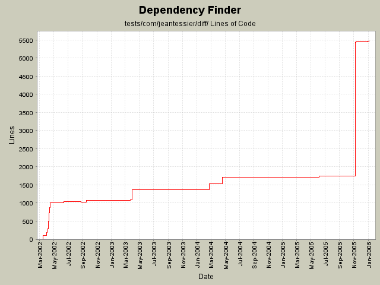

Summary Period: 2002-03-17 to 2006-01-03
[root]/tests/com/jeantessier/diff

Total Lines Of Code:
5480 (2006-01-04 08:56)
| Author | Changes | Lines of Code | Lines per Change |
|---|---|---|---|
| jeantessier | 111 (100.0%) | 9463 (100.0%) | 85.2 |
Fix target for running all tests and speed up test class loading for diff tests
61 lines of code changed in:
Use new JAXP 1.3 constructs
12 lines of code changed in:
Remove Xalan JARs, use implementation from JDK instead.
3 lines of code changed in:
Only show class's <modified-declaration> when necessary, as determined by the strategy
42 lines of code changed in:
Merge redesign for published API JarJarDiff
4194 lines of code changed in:
Detect code differences
39 lines of code changed in:
Clean up extra "throws" clauses and unused parameters
1 lines of code changed in:
Use only spaces for indentation
1515 lines of code changed in:
Update copyright notice to 2005
7 lines of code changed in:
Use File.separator instead of explicit '\'
2 lines of code changed in:
Phase X: naming changes
All test classes and test data
12 lines of code changed in:
Phase X: naming changes
All test classes and test data
437 lines of code changed in:
Phase V of naming change:
com.jeantessier.dependencyfinder complete
com.jeantessier.dependencyfinder.ant complete
com.jeantessier.dependencyfinder.cli complete
com.jeantessier.dependencyfinder.gui complete
com.jeantessier.dependencyfinder.diff complete
com.jeantessier.dependency.metrics complete
576 lines of code changed in:
Phase I of naming change
16 lines of code changed in:
Change copyright to 2004
7 lines of code changed in:
Use OOMetrics for reporting outbound dependencies
6 lines of code changed in:
Use right code to parse XML document in String
3 lines of code changed in:
Remove extraneous trace messages
3 lines of code changed in:
Use XPath to explore generated XML
50 lines of code changed in:
Fix XML representations
251 lines of code changed in:
(18 more)
Generated by StatCVS 0.2.2